Some Sample Color Look Up Tables created with hev-createLUT. They are compatible with its related commands. See the hev-createLUT on-line manual page for details.
These files are located at: ${HEVROOT}/savg/src/hev-createLUT/lutSamples
# bbr.dat: Black Body Radiation
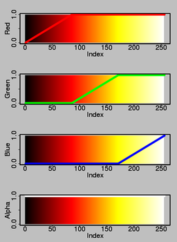
bbr.dat
bbr.lut
# blackWhite8.dat: black to white thru eight color combinations
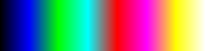
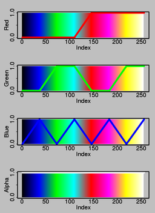
blackWhite8.dat
blackWhite8.lut
# blackWhite.dat: full black to full white
 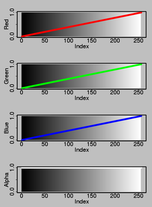
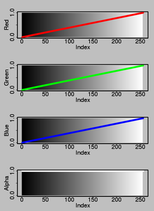
blackWhite.dat
blackWhite.lut
#blueRed.dat: blue to red thru six color combinations (no black or white)
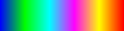
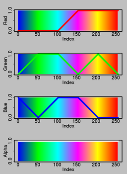
blueRed6.dat
blueRed6.lut
# blueYellow.dat: blue to yellow thru six combinations (no black or white)
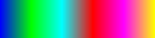
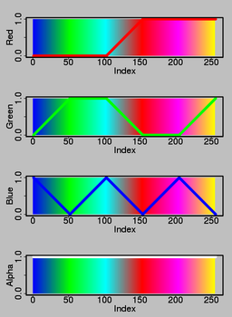
blueYellow6.dat
blueYellow6.lut
# blueYellow.dat: blue to yellow
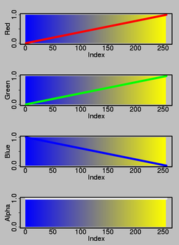
blueYellow.dat
blueYellow.lut
# bluGreYelRedAplpha.dat: blue-green-yellow-red
 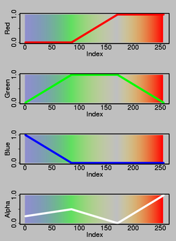
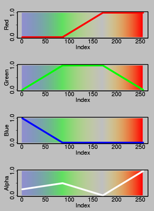
bluGreYelRedAlpha.dat
bluGreYelRedAlpha.lut
# bluGreYelRed.dat: blue-green-yellow-red
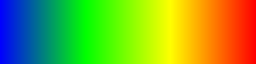
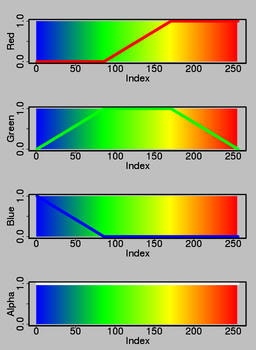
bluGreYelRed.dat
bluGreYelRed.lut
# grayPurple.dat Gray to Purple
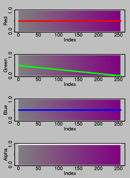
grayPurple.dat
grayPurple.lut